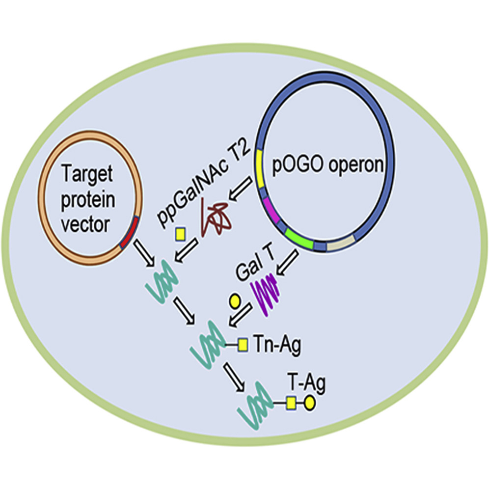

A Bacterial Expression Platform for Production of Therapeutic Proteins Containing Human-like O-Linked Glycans
Keywords:

Abstract
Genetics behind the biosynthesis of nonulosonic acid containing lipooligosaccharides in Campylobacter coli.
Keywords:
Directed evolution of bacterial polysialyltransferases
Keywords: